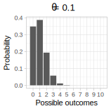
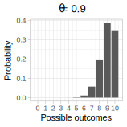
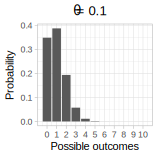
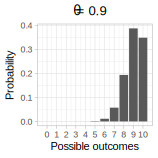

1.4 Discrete random variables: An example using the binomial distribution
Consider the following sentence:
“It’s raining, I’m going to take the ….”
Suppose that our research goal is to estimate the probability, call it \(\theta\), of the word “umbrella” appearing in this sentence, versus any other word. If the sentence is completed with the word “umbrella”, we will refer to it as a success; any other completion will be referred to as a failure. This is an example of a binomial random variable: given \(n\) trials, there can be only two possible outcomes in each trial, a success or a failure, and there is some true unknown probability \(\theta\) of success that we want to estimate. When the number of trials is one, the random variable is said to have a Bernoulli distribution.
One way to empirically estimate this probability of success is to carry out a cloze task. In a cloze task, subjects are asked to complete a fragment of the original sentence, such as “It’s raining, I’m going to take the …”. The predictability or cloze probability of “umbrella” is then calculated as the proportion of times that the target word “umbrella” was produced as an answer by subjects.
Assume for simplicity that \(10\) subjects are asked to complete the above sentence; each subject does this task only once. This gives us independent responses from \(10\) trials that are either coded a success (“umbrella” was produced) or as a failure (some other word was produced). We can sum up the number of sucesses to calculate how many of the 10 trials had “umbrella” as a response. For example, if \(8\) instances of “umbrella” are produced in \(10\) trials, we would estimate the cloze probability of producing “umbrella” would be \(8/10\).
We can repeatedly generate simulated sequences of the number of successes in R (later on we will demonstrate how to generate such random sequences of simulated data). Here is a case where we run the same experiment \(20\) times (the sample size is \(10\) each time).
## [1] 5 3 5 5 3 4 4 6 6 6 9 7 7 8 4 6 6 5 5 6The number of successes in each of the \(20\) simulated experiments above is being generated by a discrete random variable \(Y\) with a probability distribution \(p(y|\theta)\) called the binomial distribution.
For discrete random variables such as the binomial, the probability distribution \(p(y|\theta)\) is called a probability mass function (PMF). The PMF defines the probability of each possible outcome. In the above example, with \(n=10\) trials, there are \(11\) possible outcomes: \(y=0,1,2,...,10\) successes. Which of these outcomes is most probable depends on the parameter \(\theta\) in the vinomial distribution that represents the probability of success.
The left-hand side plot in Figure 1.2 shows an example of a binomial PMF with \(10\) trials, with the parameter \(\theta\) fixed at \(0.5\). Setting \(\theta\) to \(0.5\) leads to a PMF where the most probable outcome is \(5\) successes out of \(10\). If we had set \(\theta\) to, say 0.1, then the most probable outcome would be \(1\) success out of \(10\); and if we had set \(\theta\) to \(0.9\), then the most probable outcome would be \(9\) successes out of \(10\).
 

FIGURE 1.2: Probability mass functions of a binomial distribution assuming 10 trials, with 50%, 10%, and 90% probability of success.
The probability mass function for the binomial is written as follows.
\[\begin{equation} \mathit{Binomial}(k|n,\theta) = \binom{n}{k} \theta^{k} (1-\theta)^{n-k} \end{equation}\]
Here, \(n\) represents the total number of trials, \(k\) the number of successes (this could range from 0 to 10), and \(\theta\) the probability of success. The term \(\binom{n}{k}\), pronounced n-choose-k, represents the number of ways in which one can choose \(k\) successes out of \(n\) trials. For example, 1 success out of 10 can occur in 10 possible ways: the very first trial could be a 1, the secone trial could be a 1, etc.
The term \(\binom{n}{k}\) expands to \(\frac{n!}{k!(n-k)!}\). In R, it is computed using the function choose(n,k), with \(n\) and \(k\) representing positive integer values.
When we want to express the fact that the data is assumed to be generated from a binomial random variable, we will write \(Y \sim \mathit{Binomial}(n,\theta)\), where \(\sim\) should be read as “is being generated from”. If the data is generated from a random variable that has some other probability distribution \(f(\theta)\), we will write \(Y\sim f(\theta)\). We are using \(f(\cdot)\) synonymously with \(p(\cdot)\) to represent a probability distribution.
1.4.1 The mean and variance of the binomial distribution
It is possible to analytically compute the mean (expectation) and variance of the PMF associated with the binomial random variable \(Y\).
The expectation of a discrete random variable \(Y\) with probability mass function f(y), is defined as
\[\begin{equation} E[Y] = \sum_y y \cdot f(y) \end{equation}\]
As a really simple example, suppose that we toss a fair coin once. The possible outcomes are Tails (represented as 0) and Heads (represented as 1), each with equal probability, 0.5. The expectation is:
\[\begin{equation} E[Y] = \sum_y y \cdot f(y) = 0\cdot 0.5 + 1\cdot 0.5 = 0.5 \end{equation}\]
The expectation has the interpretation that if we were to do the experiment a large number of times and calculate the sample mean of the observations, in the long run we would approach the value 0.5. Another way to look at the above definition is that the expectation gives us the weighted mean of the possible outcomes, weighted by the respective probabilities of each outcome.
Without getting into the details of how these are derived mathematically (Kerns 2014), we just state here that the mean of \(Y\) (the expectation \(E[Y]\)) and variance of \(Y\) (written \(Var(Y)\)) of a binomial distribution with parameter \(\theta\) and \(n\) trials are \(E[Y] = n\theta\) and \(Var(Y) = n\theta (1-\theta)\).
In the binomial example above, \(n\) is a fixed number because we decide on the total number of trials before running the experiment. In the PMF, \(\theta\) is also a fixed value; the only variable in a PMF is \(k\). In real experimental situations we never know the true value of \(\theta\). But \(\theta\) can be estimated from the data. From the observed data, we can compute the estimate of \(\theta\), \(\hat \theta=k/n\). The quantity \(\hat \theta\) is the observed proportion of successes, and is called the maximum likelihood estimate of the true (but unknown) parameter \(\theta\). Once we have estimated \(\theta\) in this way, we can also obtain an estimate of the variance by computing \(n\theta (1-\theta)\). These estimates are then used for statistical inference.
What does the term “maximum likelihood estimate” mean? The term likelihood refers to the binomial distribution function, i.e., the PMF we saw above, \(p(k|n,\theta)\); the difference is that the binomial distribution is seen as a function of \(\theta\), having observed a particular value for \(k\) (i.e., \(k\) is now fixed, along with \(n\)). Recall that the PMF assumes that \(\theta\) and \(n\) are fixed, and \(k\) will vary from 0 to 10 when the experiment is repeated multiple times. The likelihood function is the same function as the PMF, \(p(k|n,\theta)\), but assumes that the data is fixed and only the parameter \(\theta\) varies (from 0 to 1). The likelihood function is written \(\mathcal{L}(\theta| k,n)\).
For example, suppose that we record \(n=10\) trials, and observe \(k=7\) successes. What is the probability of observing \(7\) successes out of \(10\)? We need the binomial distribution to compute this value:
\[\begin{equation} \mathcal{L}(\theta|k=7,n=10)=\mathit{Binomial}(k=7,n=10|\theta) = \binom{10}{7} \theta^{7} (1-\theta)^{10-7} \end{equation}\]
If we now plot the likelihood function for all possible values of \(\theta\) ranging from \(0\) to \(1\), we get the plot shown in Figure 1.3.

FIGURE 1.3: The likelihood function for 7 successes out of 10.
What is important about this plot is that it shows that, given the data, the maximum point is at the point \(0.7\), which corresponds to the estimated mean using the formula shown above: \(k/n = 7/10\). Thus, the maximum likelihood estimate (MLE) gives us the most likely value that the parameter \(\theta\) has, given the data. In the binomial, the proportion of successes \(k/n\) can be shown to be the maximum likelihood estimate of the parameter \(\theta\).
A crucial point: the “most likely” value of the parameter is with respect to the data at hand. The data are used to choose as an estimate of the unknown parameter a value for which the probability (discrete case) or probability density (continuous case) of getting the sample values is a maximum. The MLE from a particular sample of data need not invariably give us an accurate estimate of \(\theta\). For example, if we run our experiment for \(10\) trials and get \(1\) success out of \(10\), the MLE is \(0.10\). We could have just happened to observe only one success out of ten by chance, even if the true \(\theta\) were \(0.7\). If we were to repeatedly run the experiment, in the long run, the MLE computed each time would converge around the true value of the parameter. Figure 1.4 illustrates this point.
FIGURE 1.4: The plot shows the estimate of the mean proportion of successes sampled from a binomial distribution with true probability of success 0.7, with increasing sample sizes. As the sample size increases, the estimate converges to the true value of 0.7.
1.4.2 What information does a probability distribution provide?
In Bayesian data analysis, we will constantly be asking the question: what information does a probability distribution give us? In particular, we will treat each parameter \(\theta\) as a random variable; this will raise questions like: “what is the probability that the parameter \(\theta\) lies between two values \(a\) and \(b\)”; and “what is the range over which we can be 95% certain that the true value of the parameter lies”? In order to be able to answer questions like these, we need to know what information we can obtain once we have decided on a probability distribution that is assumed to have generated the data, and how to extract this information using R. We therefore discuss the different kinds of information we can obtain from a probability distribution. For now we focus only on the binomial random variable introduced above.
1.4.2.1 Compute the probability of a particular outcome (discrete case only)
The binomial distribution shown in Figure 1.2 already shows the probability of each possible outcome under a different value for \(\theta\). In R, there is a built-in function that allows us to calculate the probability of \(k\) successes out of \(n\), given a particular value of \(k\) (this number constitutes our data), the number of trials \(n\), and given a particular value of \(\theta\); this is the dbinom function. For example, the probability of 5 successes out of 10 when \(\theta\) is 0.5 is:
## [1] 0.246The probabilities of success when \(\theta\) is 0.1 or 0.9 can be computed by replacing 0.5 above by each of these probabilities. One can just do this by giving dbinom a vector of probabilities:
## [1] 0.00149 0.00149The probability of a particular outcome like \(k=5\) successes is only computable in the discrete case. In the continuous case, the probability of obtaining a particular point value will always be zero (we discuss this when we turn to continuous probability distributions below).
1.4.2.2 Compute the cumulative probability of k or less (more) than k successes
Using the dbinom function, we can compute the cumulative probability of obtaining 1 or less, 2 or less successes etc. This is done through a simple summation procedure:
## the cumulative probability of obtaining
## 0, 1, or 2 successes out of 10,
## with theta=0.5:
dbinom(0, size = 10, prob = 0.5) +
dbinom(1, size = 10, prob = 0.5) +
dbinom(2, size = 10, prob = 0.5)## [1] 0.0547Mathematically, we could write the above summation as:
\[\begin{equation} \sum_{k=0}^2 \binom{n}{k} \theta^{k} (1-\theta)^{n-k} \end{equation}\]
An alternative to the cumbersome addition in the R code above is this more compact statement, which closely mimics the above mathematical expression:
## [1] 0.0547R has a built-in function called pbinom that does this summation for us. If we want to know the probability of \(2\) or less successes as in the above example, we can write:
## [1] 0.0547The specification lower.tail = TRUE (the default value) ensures that the summation goes from \(2\) to numbers smaller than \(2\) (which lie in the lower tail of the distribution in Figure 1.2). If we wanted to know what the probability is of obtaining \(3\) or more successes out of \(10\), we can set lower.tail to FALSE:
## [1] 0.945The cumulative distribution function or CDF can be plotted by computing the cumulative probabilities for any value \(k\) or less than \(k\), where \(k\) ranges from \(0\) to \(10\) in our running example. The CDF is shown in Figure 1.5.

FIGURE 1.5: The cumulative distribution function for a binomial distribution assuming 10 trials, with 50% probability of success.
1.4.2.3 Compute the inverse of the cumulative distribution function (the quantile function)
We can also find out the value of the variable \(k\) (the quantile) such that the probability of obtaining \(k\) or less than \(k\) successes is some specific probability value \(p\). If we switch the x and y axes of Figure 1.5, we obtain another very useful function, the inverse CDF.
The inverse of the CDF (known as the quantile function in R because it returns the quantile, the value \(k\)) is available in R as the function qbinom. The usage is as follows: to find out what the value \(k\) of the outcome is such that the probability of obtaining \(k\) or less successes is \(0.37\), type:
## [1] 4One can visualize the inverse CDF of the binomial as in Figure 1.6.
FIGURE 1.6: The inverse CDF for the binomial(size=10,prob=0.5).
1.4.2.4 Generate simulated data from a \(\mathit{Binomial}(n,\theta)\) distribution
We can generate simulated data from a binomial distribution by specifying the number of trials and the probability of success \(\theta\). In R, we do this as follows:
## [1] 3The above code generates the number of successes in an experiment with \(10\) trials. Repeatedly run the above code; we will get different numbers of successes each time.
As mentioned earlier, if there is only one trial, then instead of the binomial distribution, we have a Bernoulli distribution. For example, if we have 10 observations from a Bernoulli distribution, where the probability of success if 0.5, we can simulate data as follows using the function rbern from the package extraDistr.
## [1] 0 1 1 1 1 1 0 0 1 0The above kind of output can also be generated by using the rbinom function: rbinom(10, size = 1, prob = 0.5).
When the data are generated using the rbinom function in this way, one can calculate the number of successes by just summing up the vector, or computing its mean and multiplying by the number of trials, here \(10\):
## [1] 0 1 1 1 1 1 1 0 1 0## [1] 7## [1] 7References
Kerns, G.J. 2014. Introduction to Probability and Statistics Using R. Second Edition.